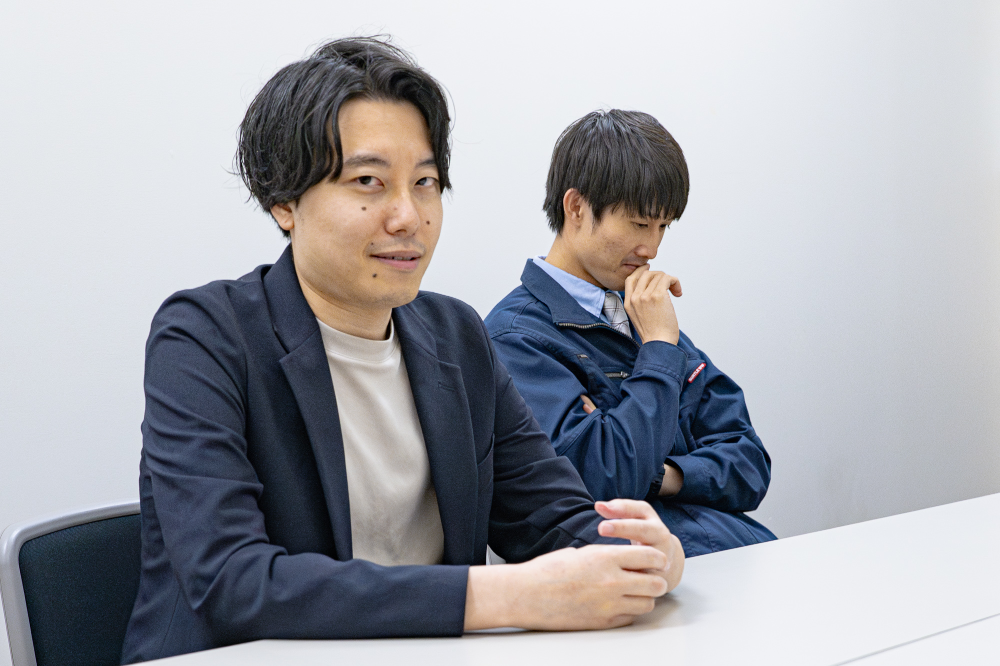
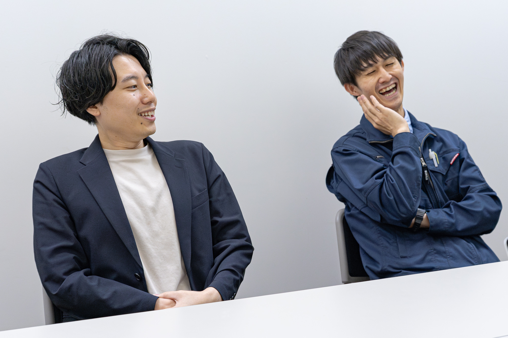
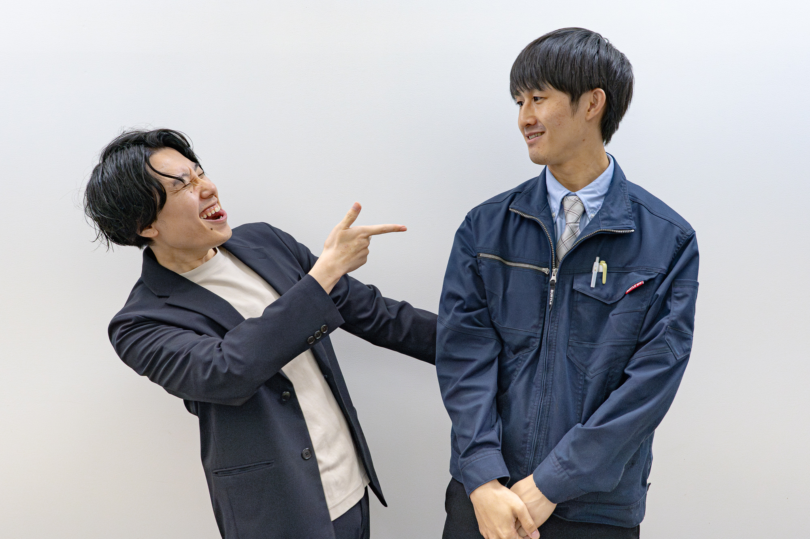
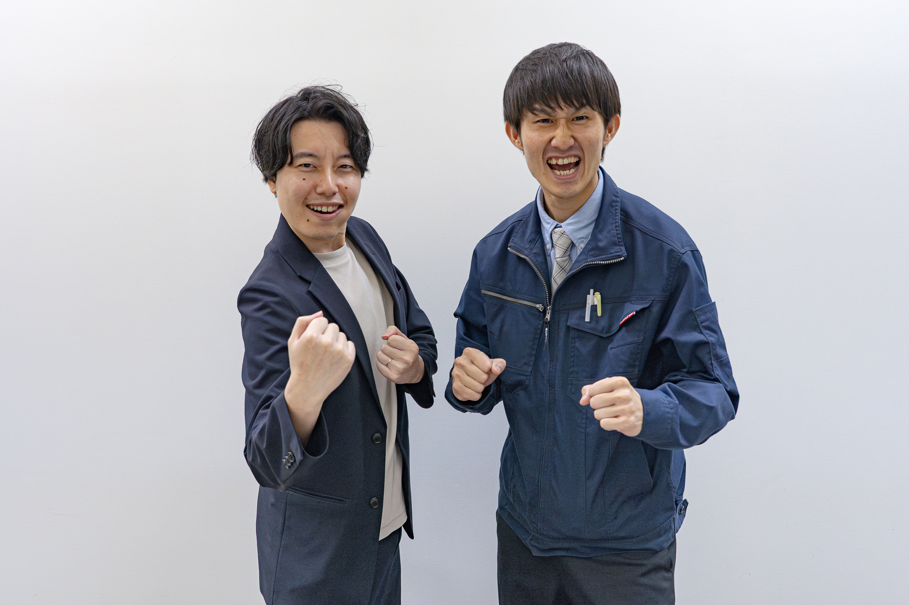

高校・大学時代から互いを笑わせ合っていた二人が、社会人生活の荒波を経て、2024年にコンビを結成。
お笑いに対する真剣な眼差しと、独特な結成秘話を持つ「ミチエダ」の、リアルで等身大の言葉をお届けします。
みはら（写真左）・龍道（写真右）
- 1997年1月4日生まれ / 鹿児島県出身
- 趣味・特技：「笑かせやす。」
- 職業：会社員
- X：@michieda_ryudo
- Instagram：@michieda_ryudo
- 1996年8月16日生まれ / 鹿児島県出身
- 趣味・特技：卓球
- 職業：会社員
- X：@michieda_mihara
- Instagram：@michieda_mihara
ーー結成はいつですか？
龍道：2024年3月21日です。
みはら：すげえ覚えてるな。
ーーコンビ名の由来を教えてください
みはら：コンビ名は、共通の友達の名前を文字ってます。
龍道：俺らが唯一認めてるおもろいやつがいて、そいつの名前なんすよ。そいつより面白くなんないと、みたいな。
ーー結成のきっかけを教えてください。
龍道：こいつが離婚したんですよ！！
みはら：（笑）いや、離婚手前までいって、、、
龍道：嘘つくのは違うって！
みはら：まあまあ、離婚はしたけど事実婚みたいな状態で。そんなのとか、前の仕事が嫌すぎたりとかで、こいつに「生きていけん」って言って。「芸人になろう」って言って。
龍道：まあ要は、2人とも社会不適合者なんで、仕事のこととか、こいつは家庭のこととか社会人としてやっていくのがしんどくなっちゃって。それの吐口に。
みはら：まじでプロの芸人になろうとちょっと思って。
ーーお笑いをやろうと思ったきっかけを教えてください。
みはら：「一回舞台に立ってみよう」ってなって立ってみて、プロになるにはガチ離婚しないといけないってなって、、、
龍道：？？？
みはら：今は籍を外した状態で一緒に住んでいて、普通に。
龍道：「うん、それで？」とはならんよ。
みはら：そっちのパターンでやってて。
龍道：よくあるパターンじゃないけどな。
みはら：それで、プロになってがっつり別居するのはちょっとなぁ、ってなって。「シンクロニシティ」（サラリーマンとの兼業芸人として活動していたお笑いコンビ）ってわかります？「シンクロニシティ」形式でなんとかうまいこといかんかなって。2人で賞レースとか結果残して頑張ろうって、始めた感じですね。
龍道：元々、2人で笑かし合ってたんで。
みはら：それはそうだな。
龍道：高校・大学から、LINEで講義中に笑かすとかやってたんで。その延長線上でやってる感じですかね。
みはら：本当にそれもあるかな。
龍道：面白いと思ってたから、舞台立ってみたらどうなんだろうね、と思って初めて東京で舞台に立って。全然ウケなかったけど楽しかったんで、本格的にって言っていいのかわからないけど、頻繁に舞台に出るようになりました。
ーーお笑いライブの魅力はなんだと思いますか？
みはら：プロも舞台だとテレビの3,4分じゃ見れない”遊びの時間”みたいなのが多い分、面白いかなと思います。
龍道：あとは、自分の目当てじゃない人とかも出てるから、「こんな人いるの知らなかった」とか。「生で観たらめっちゃおもろい！」とか、テレビで観る時とは違うギャップがあるから、そういう意味ではライブの面白さはあると思います。
ーー福岡でお笑いをやることの魅力を教えてください。
龍道：僕らは最初、東京の地下ライブに出たんですよ。東京は数が多いってのもあるんですけど、一回のライブで10人もお客さんがいなくて。その次のライブもお客さん30人ぐらいで「このライブで史上最多のお客さんです」みたいな状態で。
正直、福岡なめてて、全然お客さん入らないんじゃないのって思ってて。そしたら、基本的にどのライブも結構お客さん入ってるから、それはすごいなと、お客さんがいる中でネタができるのはありがたいなと思います。
ーー働きながら芸人をしていて良かったことと大変なことを教えてください。
龍道：良かったことは、シンプルにお金の心配をしなくていいこと。
みはら：お金の心配なく楽しめるっていうのはあります。
龍道：大変はことは、やっぱり時間。
みはら：そうね。
龍道：こいつが結構残業あるんですよ。だから、ネタ合わせも結構遅くなったりするから、なかなかプロの芸人さんと比べたら時間が取れないので。
みはら：会社の人に言うかどうか、とか。僕らはまだ言えないかなと思って。言ったら楽なんだろうなと思うんですけど、「今日ライブなんで」って言って。
ーー今後の目標を教えてください。
龍道：まずは九地下（九州のアマチュアお笑い界隈）で出れるライブは絶対出る。ちゃんとウケるような努力をする。そして今出てるライブでちゃんとウケるっていうのが一番近い目標。その中で、賞レースで、、、
みはら：M-1の3回戦で結構ウケる。
龍道：それ他の芸人が言ってたやつな？
みはら：でも大きい目標はそれじゃない？3回戦ってYouTubeに載るじゃないですか。そこで、コメントとかで「アマチュアだけどこいつらおもろい」みたいな。
龍道：うーん、、、
みはら：そこは違うみたいです。
龍道：でもガチで言ったら、普通にプロになりたいと思ってます。
みはら：そうだね。
龍道：そこが違いだと思ってやってるから。
みはら：プロになるためにM-1の3回戦に行きます。
取材／木村 撮影／山田